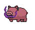
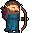

Voici le niveau 2 où Prince Croc devra traverser une forêt sombre.
Description
Une fois que PrinceCroc aura amassé son premier morceau de couronne il devra s'aventurer dans le deuxième niveau. Ce monde est une forêt sombre remplie de monstres.
Ennemis
Cochon démoniaque
Ce cochon crache du feu démoniaque !

Elfe
Cet elfe est muni d'un arc et ses flèches empoisonnent sa cible.
